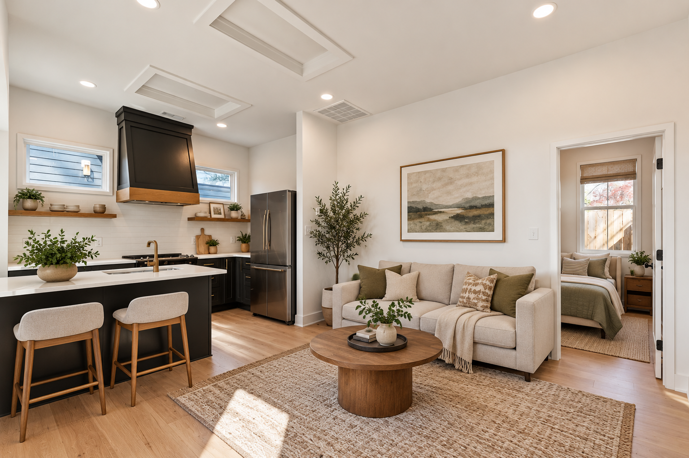
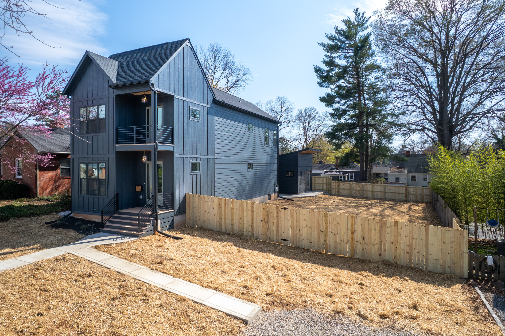
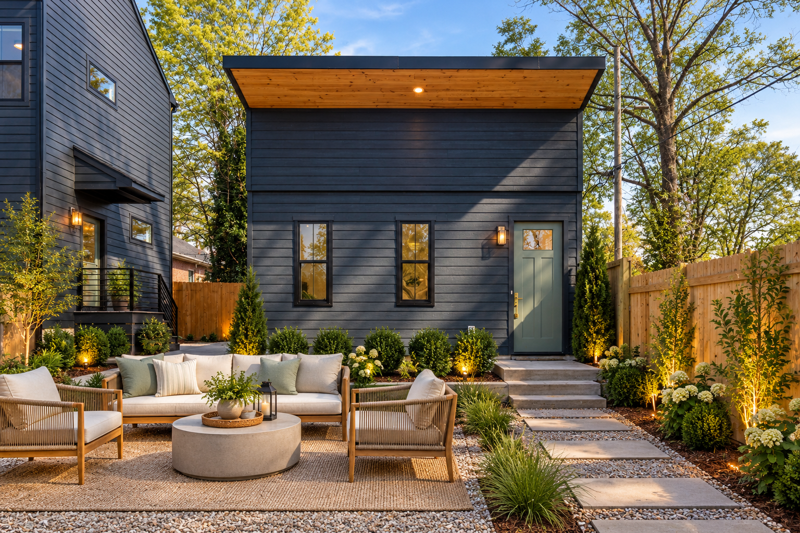
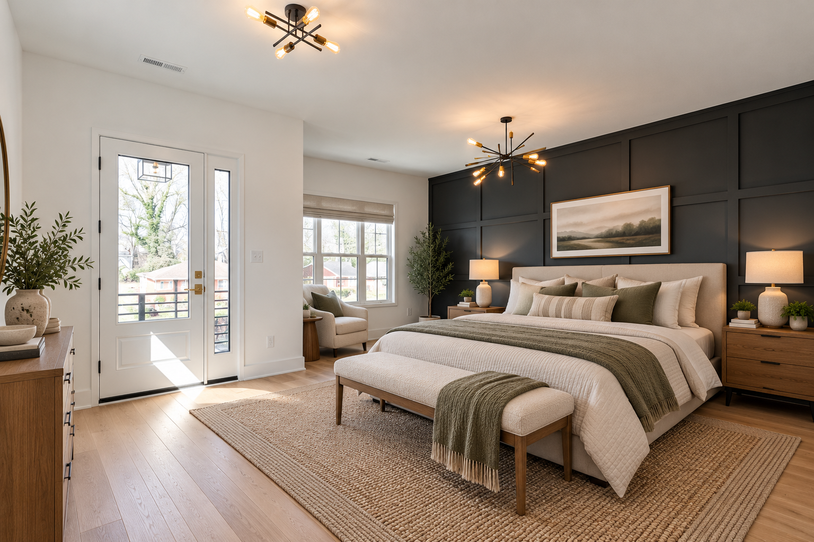
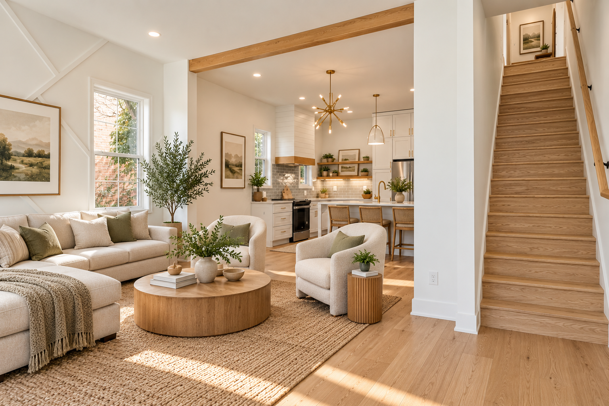
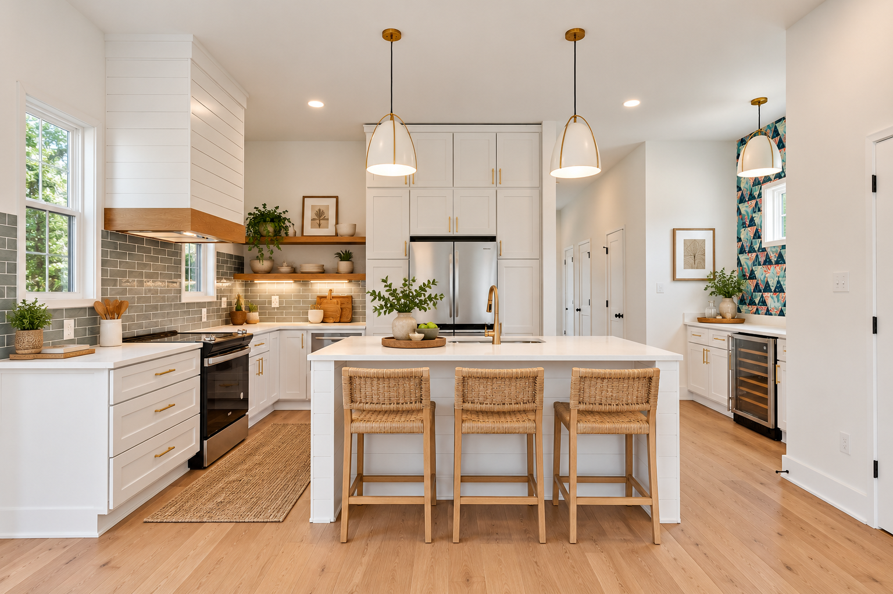
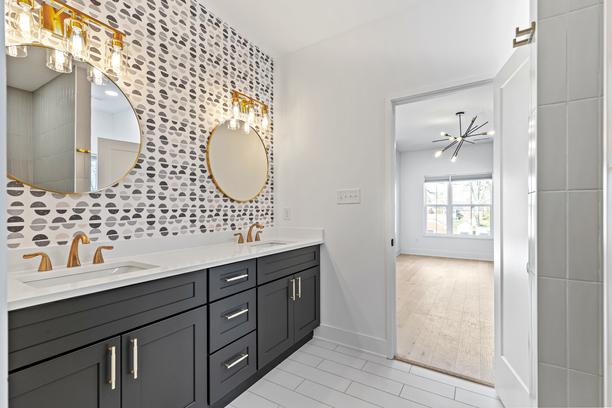
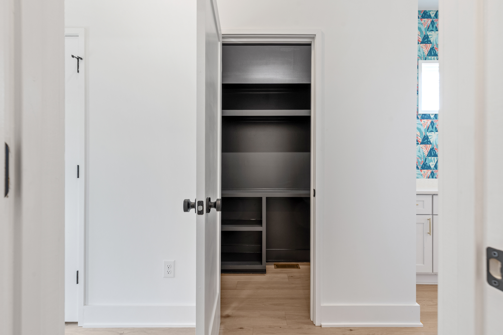
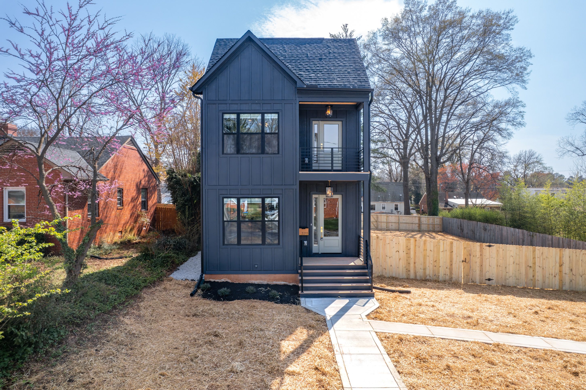

CARILLON · RICHMOND, VIRGINIA
House +
Hideaway.
One remarkable address. Room for a little more possibility.
THE PROJECT
Thoughtfully designed.
Wonderfully flexible.
House + Hideaway brings together a spacious four-bedroom, three-bathroom main home and a fully equipped detached apartment in Richmond’s Carillon neighborhood.
With a walk-in pantry, a mother-in-law suite, and spaces designed for both everyday routines and time together, the main home balances comfort with flexibility. A separate accessory dwelling unit creates even more ways to live, host, and make the most of the property.

THE MAIN HOME
Space to live.
Space to gather.
Four bedrooms and three bathrooms offer a comfortable foundation for everyday life. A dedicated walk-in pantry adds practical storage, while the mother-in-law suite provides flexible space for guests or extended family.
THE HIDEAWAY
A home of
its own.
The detached accessory dwelling unit is a complete apartment with a full kitchen, bedroom, bathroom, and its own laundry. It is a private, self-contained space designed to accommodate a variety of living arrangements.

EXPLORE THE PROPERTY
Inside House
+ Hideaway.







CARILLON · RICHMOND, VIRGINIA
Connected to
everything Richmond.
From the trails and riverfront of the James River to City Stadium and the shops and restaurants of Carytown, House + Hideaway is close to the places that make Richmond feel like home.
START A CONVERSATION →